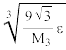
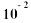
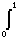
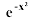
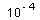
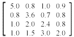

Numericka matematika
jun '98.
asistent:
1. a) Dokazati da za svaki korak h na ekvidinstantnoj mrezi koji obezbedjuje tacnost kvadratne interpolacije od e za funkciju ƒ Î C³ [a, b], vredi ocena:
h £ .
b) Odrediti maksimalan korak h za ekvidinstantnu mrezu na segmentu [- 1, 1] koji obezbedjuje tacnost kvadratne interpolacije od e = za funkciju ƒ(x) = sh x².
2. Izvesti kvadraturnu formulu oblika
.ƒ(x) dx = A0 ƒ(0) + A1 ƒ(½) + A2 ƒ(1)
i oceniti gresku metode. Primenjujuci gornju formulu izracunati dx. Kolika je greska? Racunati sa 5 decimala.
3. Newtonovom metodom naci sve korene jednacine: ln (1 + x) = 2(x² - 1) sa tacnoscu od e = .
4. Gausovom metodom sa izborom glavnog elementa odrediti determinantu matrice:

Racunati sa 5 decimala.